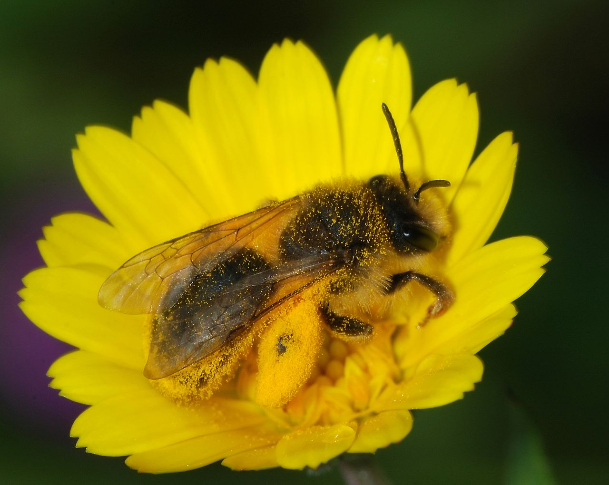
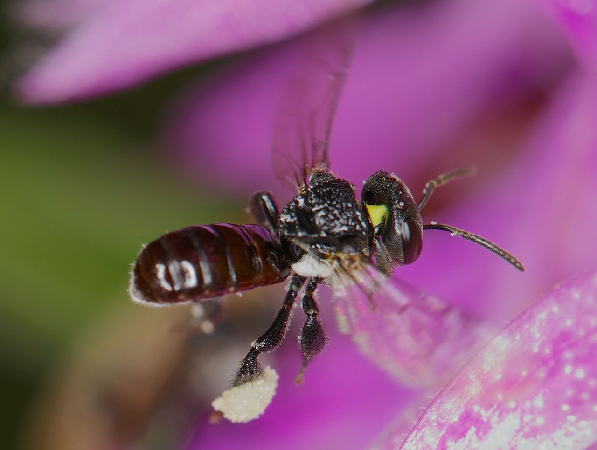
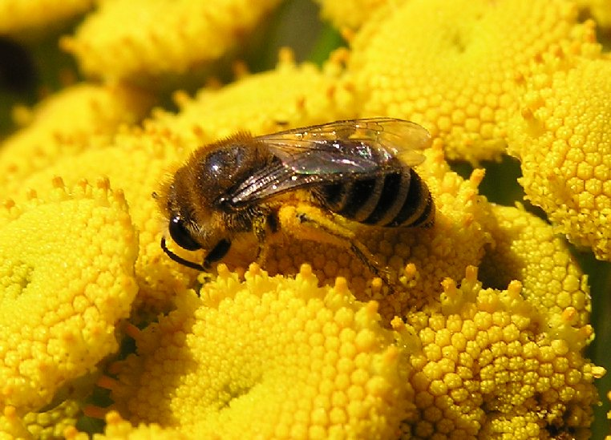

Families of bees - catalog of some families of bees: Pick your favourite type of bee!
Side bar - place for some nice ad
General Info
Family: Andrenidae
Number of avalible types: 1300
Found in: Mostly in Africa
Average life span: 5 months
Pros and cons
Advantages
- Have big advantage durning dusk
- Excells in humid areas
- Above average flight speed
- Above average legs grip strenght
Disadvantages
- Sleep durning the day
- Have to rest more often than other families
- Prone to diseases
- Most have Vibrant colors - Easier to spot
Picture of Bee

General Info
Family: Apidae
Number of avalible types: 5700
Found in: Europe
Average life span: 7 months
Pros and cons
Advantages
- Most social of all bees
- Most are valuable pollinators
- Above average honey production
- Above average lifespan
Disadvantages
- Inactive durning the night
- Above average size - easier to spot
- Below average flight speed
- Most die after stinging an opponent
Picture of Bee

General Info
Family: Colletidae
Number of avalible types: 2000
Found in: Australia & Africa
Average life span: 2 months
Pros and cons
Advantages
- Uniqe way of building nests
- Most are valuable pollinators
- Small in size - hard to spot
- Above average speed
Disadvantages
- Can't carry a lot of pollen
- Compared to other bees have a very short lifespan
- Nests are usualy exposed to natural predators
- Very weak offensive capabilities
Picture of Bee

General Info
Family: Megachilidae
Number of avalible types: 1200
Found in: Amercia
Average life span: 3 moths
Pros and cons
Advantages
- Have parasitic and non-parasitic variants
- Great offensive capabilities
- Hard to spot hives
- Above average stamina
Disadvantages
- Can't carry a lot of pollen at once
- Above average size - easier to spot
- Males die shortly after mating
- Parasitic variant depend on other species
Picture of Bee